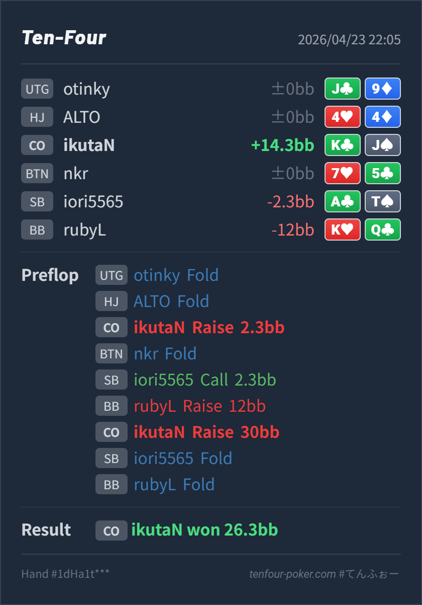

Preflop open
自然K♣J♠ は CO open range に十分入る offsuit broadway で、ここを降ろす必要はありません。
主論点は、CO K♣J♠ の 2.3BB open 自体は妥当か、その後 SB cold call と BB squeeze 12BB を受けて 30BB へ 4bet bluff する判断が成立するかです。結論は、CO 2.3BB open の KJo は open としては自然ですが、SB を残したまま BB の squeeze に KJo を 4bet で返すのはやりすぎです。BB の squeeze range には KQo のような non-premium も混ざりえますが、それでもこの node は BB vs CO の単純な 3bet より強く、A5s/A4s のような blocker bluff か、素直な fold を先に見る方が収まりやすいです。
K♣J♠A♣T♠ / BB K♥Q♣CO 2.3BB open の KJo は自然です。いちばん見直したいのは、その後の BB squeeze 12BB に対する 30BB の 4bet で、ここは攻めすぎです。CO 2.3BB は repo 内の近似基準でも 2.5BB baseline より少し広い open を置く前提なので、KJo は open range に十分入ります。今回のズレは open ではなく、continue の作り方です。SB cold call が入ったあとに BB が squeeze しているので、BB の range は BB vs CO の単純な 3bet より凝縮しやすく、しかも SB がまだ uncapped で残ります。KJo は見た目の強さより実現率を落としやすい位置です。KJo は offsuit broadway で open には使えても、4bet bluff としては A blocker がなく、5bet を受けたときにかなり苦しくなります。open できる broadway と 4bet に向く bluff は分けて考えた方が安定します。30BB という size 自体は 4bet range を持つなら自然です。問題は size より combo 選択で、ここは KJo を押し上げるより fold 寄りに置きたいです。K♣J♠A♣T♠ / BB K♥Q♣2.3BB, BTN fold, SB call 2.3BB, BB raise 12BB, CO raise 30BB, SB fold, BB fold26.3BB を獲得
自然K♣J♠ は CO open range に十分入る offsuit broadway で、ここを降ろす必要はありません。
やりすぎK♣J♠ は open には十分でも、4bet bluff に向く最上位ではありません。A blocker がなく、offsuit のぶん 5bet に当たるとさらに苦しく、call でも domination を受けやすいので、continue 上位からは外れやすいです。
| 論点 | その場で起きがちな見え方 | どこがズレたか | 次回の基準 |
|---|---|---|---|
| squeeze に対する 4bet bluff の選び方 | KJo は broadway で強く見え、K blocker もあるので前向きに返したくなる | この node では K blocker より A blocker の価値が高く、しかも SB がまだ残っています。KJo は見た目ほど 4bet 向きではなく、offsuit のぶん 5bet や multiway を受けたときの実現率もさらに落ちやすいです。 | 見た目の強さ ではなく、A blocker があるか と 未行動プレイヤーが残るか を先に見て 4bet bluff を選ぶ |
| squeeze 後の continue の組み方 | IP の broadway なので、call か raise でとりあえず続けたくなる | IP で open できる と 強い条件付き range に前向きに続けられる は別です。SB cold call -> BB squeeze という流れでは、BB の continue range がかなり強くなり、KJo は call しても 4bet しても苦しくなりやすい帯に落ちます。 | cold call が入った squeeze では、heads-up の BB 3bet 対応 より一段厳しく見て、offsuit broadway の境界 hand はまず fold から入る |
| ストリート | その時点の見え方 | 実ハンドの位置づけ | 評価 | その場の一手 |
|---|---|---|---|---|
| Preflop open | CO 2.3BB は baseline 2.5BB より少し広く open しやすい前提で、BTN / blind の defend も少し広がりやすい spot です。 | K♣J♠ は CO open range に十分入る offsuit broadway で、ここを降ろす必要はありません。 | 自然 | open はこのままで問題ありません。 |
| Preflop vs squeeze | SB cold call のあとに BB が squeeze しているので、BB は premium だけでなく blocker 系や一部 merged hand を持てますが、なお通常の BB vs CO 3bet よりは強い条件付き range です。しかも SB がまだ残るため、CO 側の continue は一段厳しくなります。 | K♣J♠ は open には十分でも、4bet bluff に向く最上位ではありません。A blocker がなく、offsuit のぶん 5bet に当たるとさらに苦しく、call でも domination を受けやすいので、continue 上位からは外れやすいです。 | やりすぎ | default は fold 寄りです。4bet range を使うなら A5s/A4s 系へ譲りたいです。 |
| Flop | ||||
| Turn | ||||
| River |
open が自然か と その後の 4bet/continue が自然か は分けて見ると判断がぶれにくいです。今回の KJo は open までは良く、ズレは squeeze 対応側です。broadway で見た目が強い ことと、4bet bluff に向く ことは同じではありません。特に A blocker の有無と offsuit / suited の差は preflop の押し返しでかなり効きます。BB が広く squeeze しうる 事実だけで戦いすぎない方がよいです。range が少し wide でも、未行動プレイヤーが残るぶん Hero 側の continue 条件も厳しくなります。BB が dead money を狙って KQo のような hand まで広く squeeze し、なおかつ 4bet に過剰に降りる pool なら、4bet bluff 自体は exploit で利益を持つことがあります。まず A blocker 系を使う です。KJo まで広げるのは、相手がかなり over-squeeze / overfold と読めるときに限った方が安全です。